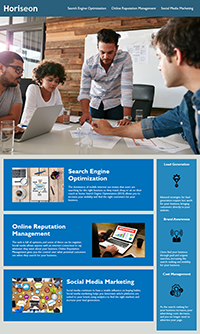

I am a student at Notherwestern University studying full stack development while working full time. I am also a passionate photographer who practices, making and processing images and film every day. I love dogs.
 e-mail
e-mail
sam bailey
development :: photography :: design
sam i am
photography
Simply put, I make photos of the things we see everyday.
Small scenes we see and forget.
The man-made beauty of the architecture of cities.
Seattle and Chicago are my homes.
I hope you enjoy viewing the images as much as I enjoy making them.
thoughtsinbuttermilk.com
instagram
accessibility refactor

The goal of this project is to refactor an existing website to be compliant with accessibility standards and tools.
The original source code was provided as part of the assignment.
The requirement is to refactor the sources without changing the useability or display of the site.
github repository
deployed application